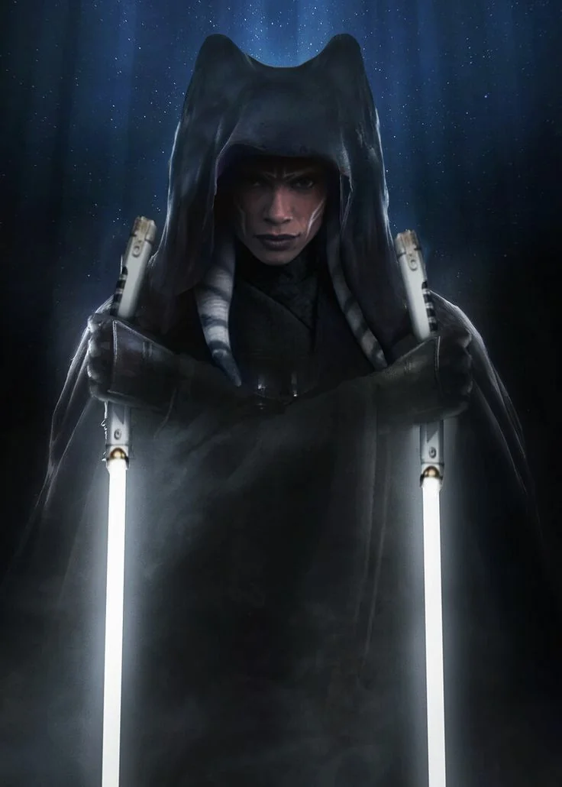
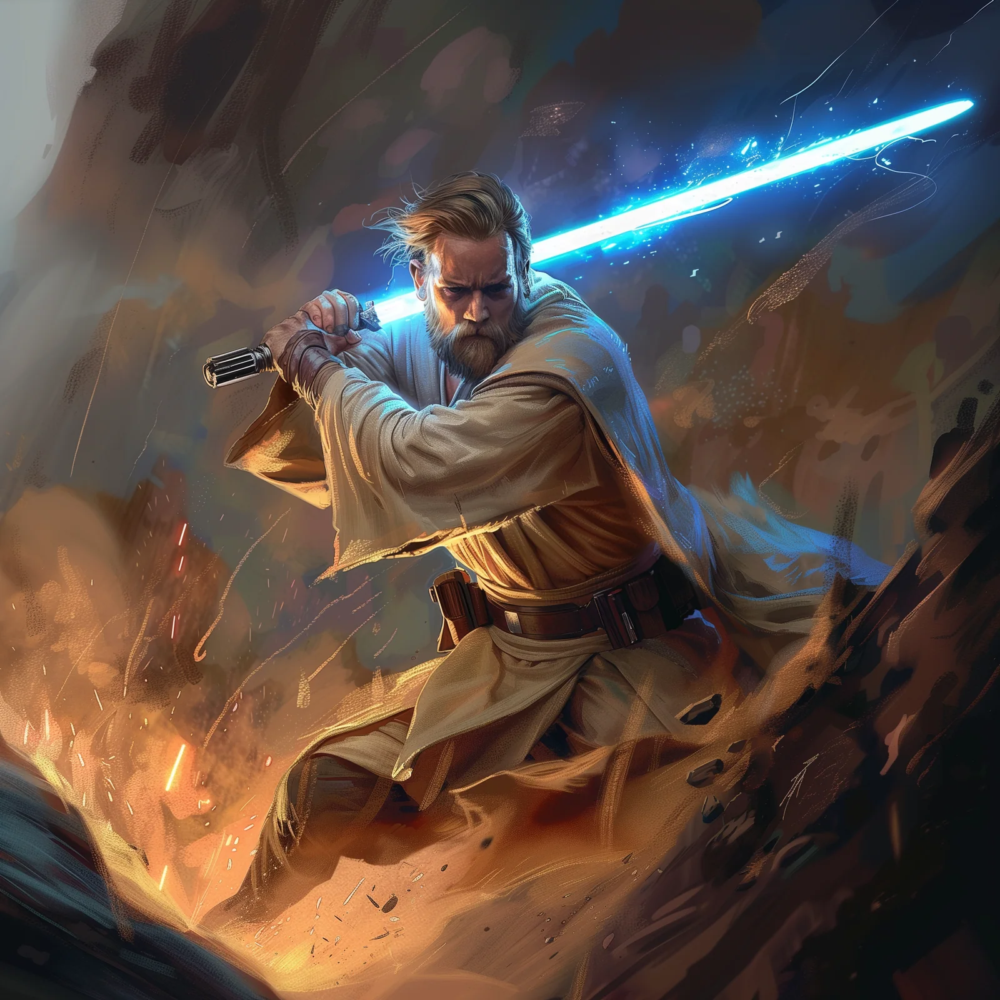
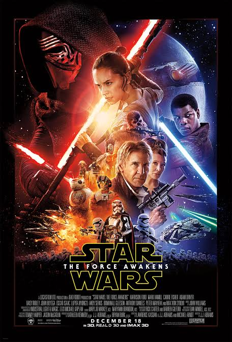
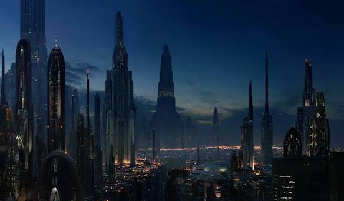
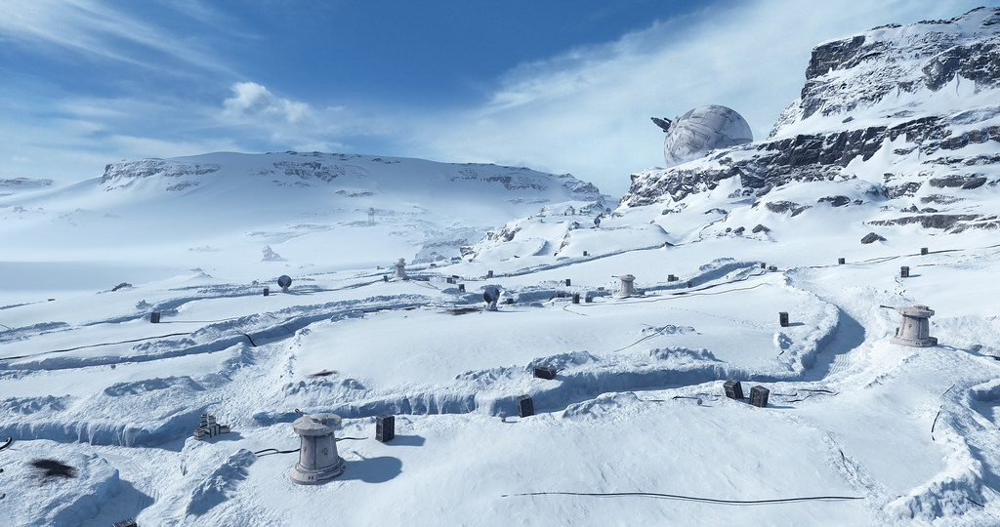
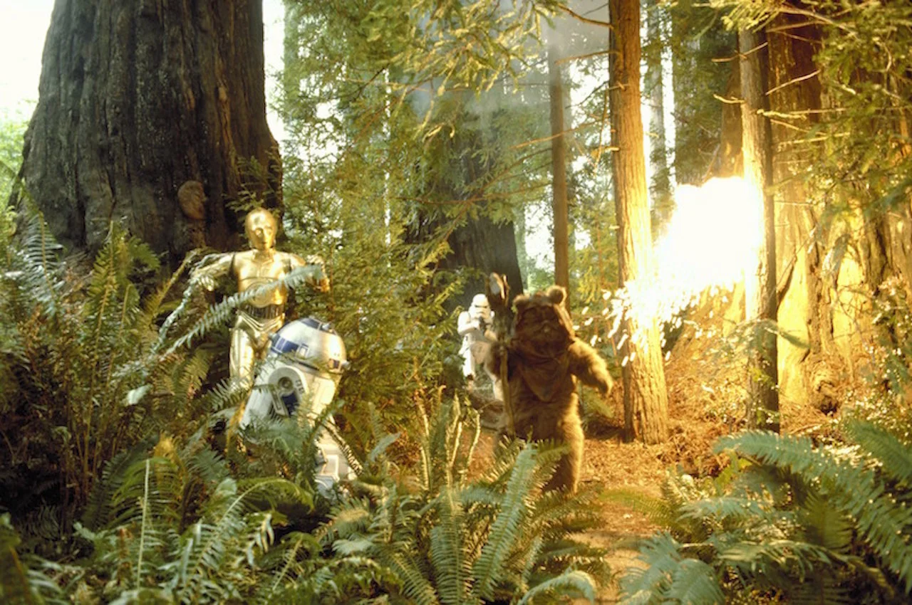
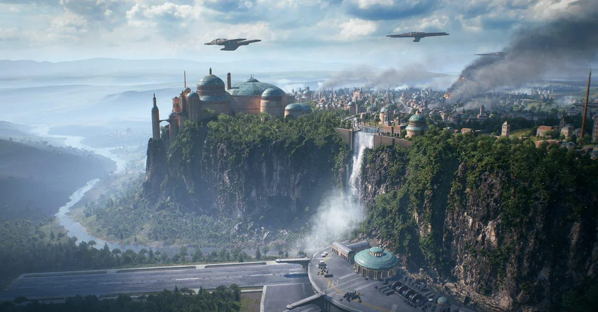

Bekannte Charaktere
Darth Vader
Der dunkle Lord der Sith.

Luke Skywalker
Ein mächtiger Jedi.

Yoda
Ein weiser Jedi-Meister.
Willkommen in einer weit, weit entfernten Galaxis.
Der dunkle Lord der Sith.
Ein mächtiger Jedi.
Ein weiser Jedi-Meister.
Der noch nicht der dunklen seite verfallene Jedi-Ritter

Die ehmalige Schülerin von Anikan

Ein mächtiger Jedi-Meister der den Dunklen Lord 2 mal besigte
Alle neun Episoden der Skywalker-Saga.

Qui-Gon Jinn und Obi-Wan Kenobi entdecken den jungen Anakin Skywalker.

Die Galaxis steht kurz vor einem großen Krieg. Die Klonkriege beginnen.

Anakin Skywalker fällt auf die dunkle Seite und wird zu Darth Vader.

Luke Skywalker schließt sich der Rebellion gegen das Imperium an.
Luke trainiert bei Yoda und stellt sich Darth Vader.
Luke versucht, seinen Vater zurück auf die helle Seite zu bringen.

Eine neue Bedrohung entsteht und Rey entdeckt ihre Verbindung zur Macht.
Rey sucht Luke Skywalker und versucht, die Geheimnisse der Jedi zu verstehen.
Der letzte Kampf zwischen der Ersten Ordnung und dem Widerstand beginnt.
Entdecke die faszinierenden Welten der Galaxis.

Ein trockener Wüstenplanet mit zwei Sonnen. Hier wachsen Anakin und Luke Skywalker auf.

Ein riesiger Stadtplanet und das politische Zentrum der Galaktischen Republik.

Ein gefährlicher Planet voller Lava. Hier kämpfen Obi-Wan und Anakin gegeneinander.

Ein eisiger Planet, auf dem die Rebellen eine geheime Basis errichten.

Ein bewaldeter Mond, auf dem die Rebellen gegen das Imperium kämpfen.

Ein wunderschöner Planet mit grünen Landschaften und Seen. Die Heimat von Padmé Amidala.
Hier findest du Kontaktinformationen.